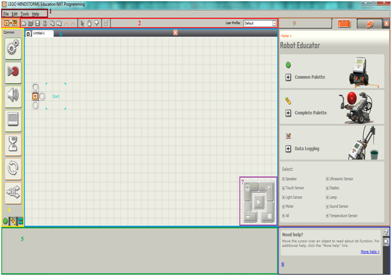

Popis programovacího prostředí

1 - Roletové nabídky
Na vrchní liště okna se nachází 4 roletové nabídky s dalšími podnabídkami:
- File
- New
- Open
- Close
- Save
- Save As
- Page Setup
- Print
- Exit
- Edit
- Make a New My Block
- Edit Selected My Block
- Edit My Block Icon
- Manage Custom Pallete
- Manage Profiles
- Define Constants
- Tools
- Calibrate Sensors
- Update NXT Firmware
- Block Import and Export Wizard
- Download to Multiple NXTs
- Help
- Contents and Indexes
- Online Support
- Online Updates
- Register Product
- About LEGO MINDSTORMS Edu NXT
Nabídky obsahují často používané funkce a lze je aktivovat
buď pomocí levého tlačítka myši nebo kombinací Alt +
podtržené písmeno. Obdobným způsobem lze aktivovat i jednoduché
příkazy v nabídce.
Postup:
- Kurzor myši nastavte na příslušný název nabídky a klikněte.
- Po otevření nabídky vyberte kurzorem žádanou funkci a opět na ni klikněte.
- Alternativně přidržte stisknutou klávesu Alt a stiskněte klávesu odpovídající
podtrženému písmenu v názvu nabídky.
2 - Lišta s tlačítky pro rychlé spuštění
3 - Tlačítko pro přepínání mezi programem
NXT Data Logging a
NXT
Programming Software
4 - Paleta s programovacími bloky
Programovací paleta obsahuje všechny programovací bloky,
které budete potřebovat pro vytváření vašich programů.
Pro jednoduché používání je programovací paleta rozdělena do tří menších palet,
mezi kterými se přepíná pomocí záložek ve spodní části této sekce. Palety jsou následující:
- Common palette - Je to paleta, která obsahuje nejpoužívanější bloky.
Primárně je nastavena jako výchozí bod.
- Complete pallete - Tato paleta obsahuje kompletně všechny programovací bloky.
- Custom pallete - V této paletě najdete stažené bloky z webu a vlastně vytvořené.
5 - Oblast pro konfigurační panel - V této části obrazovky se zobrazuje konfigurační panel. Každý
programovací blok má svůj unikátní konfigurační panel, kde můžete specifikovat nastavení vybraného bloku.
6 - Programovací okno - Nachází se zde programovací plocha, na níž
budete spojovat bloky do sekvence. Mezi jednotlivými programy se přepíná pomocí
záložek v horní části programovacího okna. Pro uzavření aktivní programovací
plochy slouží „křížek“ napravo od záložek.
7 - Controller - Obsahuje pět tlačítek, která slouží
ke komunikaci mezi počítačem a NXT kostkou. Pomocí nich můžete stáhnout
program (nebo jen jeho část) do NXT kostky. Jedno z pěti tlačítek je určené
k otevření okna s informacemi o NXT kostce.
- NXT window button - Toto tlačítko, které je na Controlleru vlevo
nahoře, otevře NXT okno, které obsahuje záložku Memory určenou
pro správu paměti NXT kostky a záložku Communications s přehledem zařízení
připojených k PC.
- Download button
- Tímto tlačítkem, které je vlevo dole, stáhnete program do
NXT kostky a následně ho z ní můžete spustit.
- Download and run button - Toto tlačítko, které se nachází uprostřed Controlleru,
stáhne program do NXT kostky a poté ho spustí.
- Download and run selected button - Tímto tlačítkem, které najdete vpravo nahoře,
stáhnete a spustíte jen část vašeho programového kódu. Může se jednat o jeden
nebo několik bloků. Tak můžete vyzkoušet, jak bude fungovat jen malá část
vašeho programu, aniž byste museli stáhnout celý program.
- Stop button - Toto tlačítko se nachází vpravo dole a slouží
k zastavení běžícího programu.
8 - Help & Navigation - V této části se můžete přepínat pomocí
dvou záložek mezi dvěma sekcemi. První záložka s názvem
Help tab slouží jako nápověda.
Map tab je druhá záložka, která slouží k získání přehledu nad vaším programem.
9 - Robot Educator & My Portal - Tato část má také dvě záložky. První záložka
je průvodce
Robot Educator, kde najdete instrukce pro programování modelů
Robot Educator.
V druhé záložce
My portal jsou dvě tlačítka, která slouží pro přístup na webové
stránky, první na
www.mindstormseducation.com a druhé na
www.legoengineering.com.